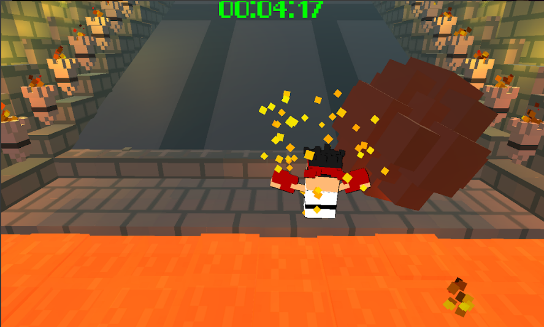
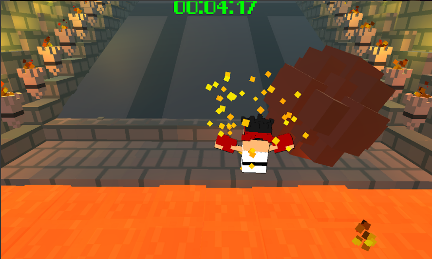

Trampoline Jump (2020)
Play Now!
Art by Gino Valencia
Aiva's Bug Bounce (2019)
Play Now!
View in Play Store
Privacy Policy
Inspired by a similar puzzle game which featured a frog. I decided to recreate the game but this time procedurally create the levels resulting in an endless experience. Made in Unity.
Art by Gino Valencia
District Underground (2018)
Visit Page
My capstone project at Media Design School as part of team Danger Noodle. Consisting of three artists and three programmers, we created a third person action game made using Unity.
Lava Plaza (2018)
View in Play Store
University project made in Unity ported to android via play store.
Survive for as long as you can without
getting hit by a boulder or falh3ng into the lava. Tap and hold to move in that direction.
 

3D Tank Game (Robotron-like)
Download
3D game in the likes of Robotron made for a University project using C++ with OpenGL, FreeGLUT, FMOD, FreeType, Assimp.
Ninja Coin Collector (2018)
Play Now!
A game idea I had in University as part of an assignment where we had to come up with a game idea every day for 52 days (found here). Designed for mobile, tap the screen to travel that direction while collecting as many coins as possible and dodging obstacles. The boots power up makes you go faster and the green arrow power up lets you change direction immediately. Made in Unity using 2D sprites.

Art by Gino Valencia
Endless Runner 2D (2017)
Play Now!
A game I made for my niece's birthday. She liked playing Sonic Dash so I thought I'd try make something
similar. Use the arrow keys to change lanes and jump over obstacles. Made in Unity using 2D sprites.
Art by Gino Valencia
Global Game Jam
Visit
page
I made some games as part of the Global Game Jam! I've been attending the event since 2015. I started off not really knowing what I was doing but over the years I was able to practise my skills and make some cool games.
Helping Hands (2020)
Download
The theme this year was REPAIR. I teamed up with some Uni mates to create a game where you play as a Racoon who is just trying to help out
society by fixing broken objects with some trash. Don't get spotted by the humans though, they are not too fond of seeing Racoons on the street unless
it is nearby some rubbish (hint hint). You also might see a random easter egg if you explore the map.
Mission Anti-Transmission (2018)
Download
The theme this year was TRANSMISSION. We made a
tower defence game within the lungs of a cricket player (our random wikipedia page as part of the diversifier
Special:Random). Within the game is a minigame which is like a chemistry test for the diversifier Inception.
The final diversifier was to include an easter egg which is a trophy of the cricket trophy from the wikipedia
page we got.

Web Surfer Dude (2017)
Download
The theme this year was WAVES so we interpreted this as web
surfing. Web Surfer Dude is a 2-player vs game where players must collect tokens which act as currency to
spawn units to attack the opponents base (either their email or firewall). Troops include virus, bot,
creepypasta, spam and trojan horse. If you play as the protagonist, collected tokens turn into good websites,
otherwise they turn into dodgy websites.
No Gains No Pain (2016)
Download
The theme this year was
RITUAL so we obviously did a workout routine. This game composes of two scenes, the workout and the
fight. Players workout one of their body parts by training at certain stations and this will help with the
fight. Eg working out the legs will increase kick damage. In the middle of the fight, the player can collect
needles which will instantly enlarge a limb depending on where the player stops it.
Rad Dad Redemption (2015)
DownloadMy first game jam. It's your child's birthday party. The clown you hired has just informed you that he is
unable to make it. The theme: "What do we do now?"As a dad you must become the clown and feed the
masses.
Rad Dad Redemption is a top down shooter (survival horror?) with optional multiplayer featuring Hairy
Godfather. There was a miscommunication as I thought there would be multiple children sprites but we ended up
using the same one for angry and they just transform into different children...